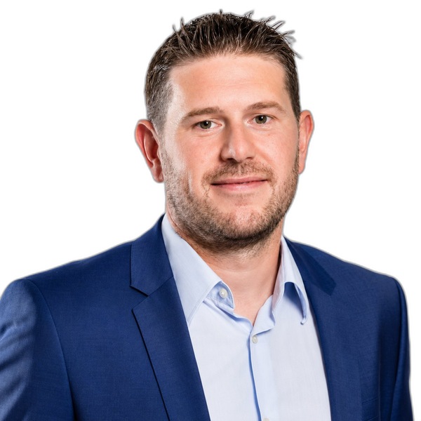
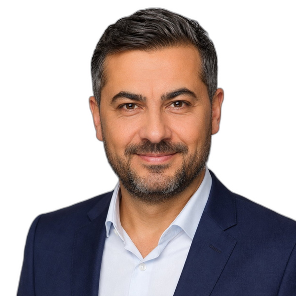
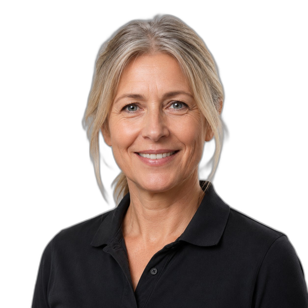
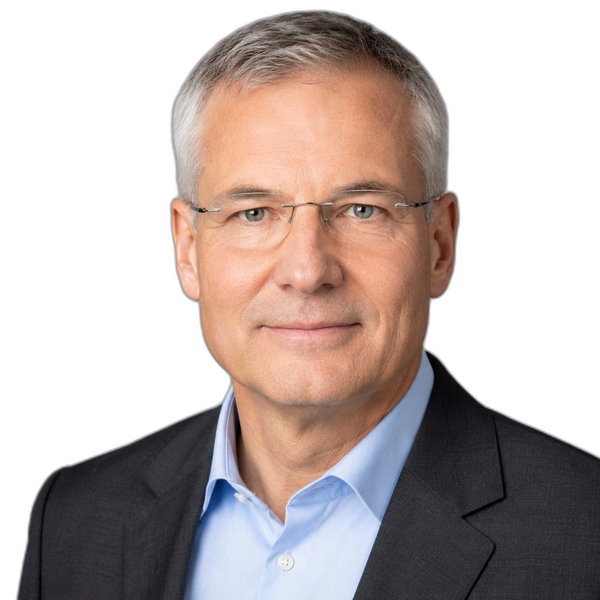
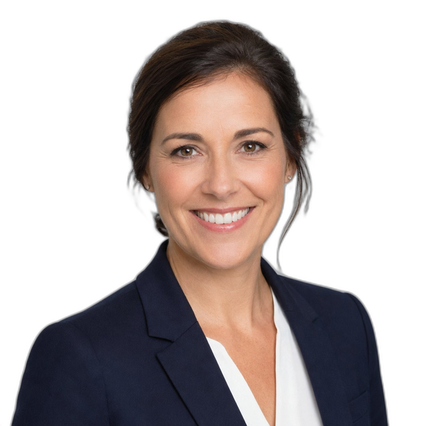
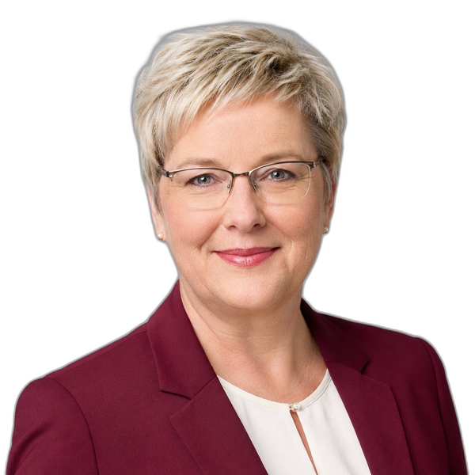
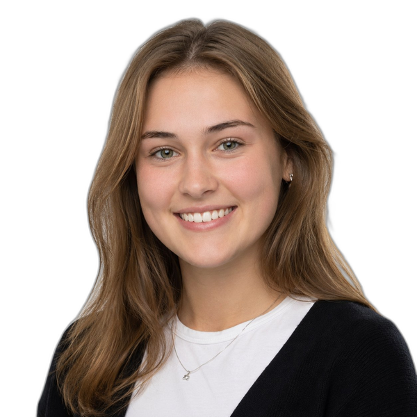
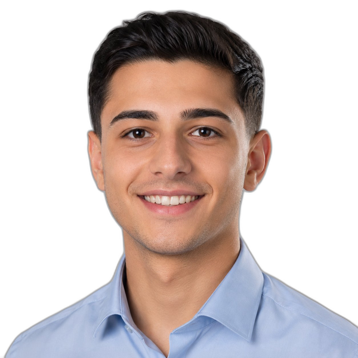

Führungsteam

Martin Frank
Geschäftsführer

Murat Aydın
Leitung Einkauf & Logistik

Sabine Koslowski
Leitung Produktion

Dr. Frank Hübner
Leitung Verwaltung

Julia Brandt
Leitung Vertrieb

Hannelore Schmitz
Leitung Rechnungswesen
Organigramm
-
GeschäftsführungMartin Frank
- ControllingTim Schreiber
- ZentralsekretariatAylin Kaya
-
Einkauf / LogistikMurat Aydın
- DispositionInes Falk
- LagerPawel Nowak
- VersandRita Hofmann
-
ProduktionSabine Koslowski
- KonstruktionJonas Petersen
- ArbeitsvorbereitungLeyla Demir
- Zuschnitt & VorfertigungMarco Bell
- Endmontage9 Arbeitnehmerinnen und Arbeitnehmer
- Qualität / VerpackungSwetlana Iwanowa
-
VerwaltungDr. Frank Hübner
- RechnungswesenHannelore Schmitz
- EDVDavid Chen
- PersonalGabriele Ortmann
-
VertriebJulia Brandt
- Fachhandel InlandOliver Stein
- ExportNuria Sánchez
- Marketing / Private LabelBen Krause
Ausbildung bei Velowerk
Die Velowerk Ruhr GmbH bildet in kaufmännischen und technischen Berufen aus – aktuell lernen drei Auszubildende im Betrieb:

Lena Kaminski
Auszubildende Industriekauffrau
2. Ausbildungsjahr
2. Ausbildungsjahr

Yusuf Demirel
Auszubildender Industriekaufmann
1. Ausbildungsjahr
1. Ausbildungsjahr
Niklas Funke
Auszubildender Fachkraft für Metalltechnik
3. Ausbildungsjahr
3. Ausbildungsjahr
Beauftragte und Gremien
Sicherheitsbeauftragter: Marco Bell · Umweltbeauftragter: Murat Aydın · Qualitätsbeauftragte: Swetlana Iwanowa · Datenschutzbeauftragter: Dr. Frank Hübner
Betriebsrat: Rita Hofmann (Vorsitz), Pawel Nowak, Gabriele Ortmann
Auszubildende: Lena Kaminski und Yusuf Demirel (Industriekaufleute), Niklas Funke (Fachkraft für Metalltechnik)